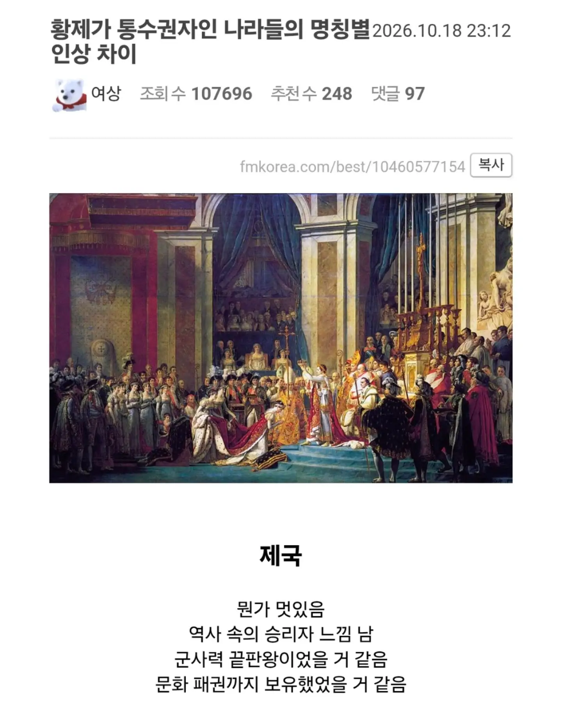

중국느낌아닌가 왜 서양을 대입하지
인민이 북한땜시 단어가 오염된 대표적인 사례지....
of the people, by the people, for the people
그냥 아무 생각 없이 무미건조하게 번역하면 인민의, 인민에 의한, 인민을 위한...이 되는데....이리 번역하면 지금은 종북좌파 소리듣고 옛날에는 그냥 끌려갔을거같음
국민도 되긴 하는데 국가주의적 느낌 나는 뉘앙스같게 보는 시각도 있고 그렇다고 시민이라고 하기엔 또 안맞고.... 대중이라고 하기엔 뭔가 모자란 느낌이고....인간이라고 하자니 연설 느낌이 팍 식고...
유사품으로 '동무'도 있네
노동절도 있음
그냥 "사람" 은 어때?
사람의, 사람에 의한, 사람을 위한
여러분의, 여러분에 의한, 여러분을 위한!
사실 인민이 국민보다 더 실사용 뜻에는 맞는 것같긴한데 북쪽 모자란 동포들이 단어를 선점하는 바람에...
황제국이 제국 아님?
다 같은 말임
어감의 차이 얘기하는거고
제국군하면 힘 승리 빠른 종전을 좋아하는 바른생활 대장군만 생각남
황제국이 제국이지 ㅋㅋㅋㅋㅋ
그리고 대한제국도 제국이다 ㅋㅋㅋㅋㅋ
대한제국은 사실상 조선 택갈이라 ㅋㅋㅋㅋㅋ
오직 제국의 스톰트루퍼만이
엠파이어: 킹덤보다 좀 큰 뭔가
임페리움: 제노포비아, 군국주의, 광신으로 가득참
카오스 스페이스 마린 : 제국을 위함
아뎁투스 아스타르테스 : 제국을 위함
인민군 : 수류탄 보급 받았는데 솔방울이 나옴
일제모티브도 좀 있을껄
UED가 황제국 느낌남
황제국이란 말을 첨들어봄